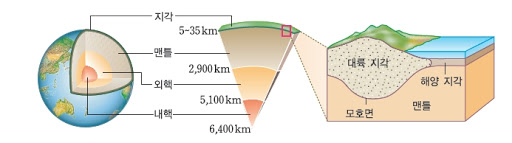
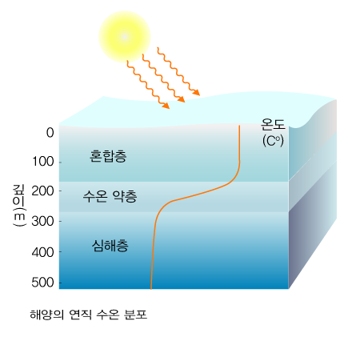

지구
지구계
- 태양에너지의 영향을 받기 때문에 계절이 변함
- 태양을 중심으로 공전함
- 물이 액체상태로 존재하기 때문에 생명가능지대
지구시스템 - 지권, 수권, 기권, 생물권, 외권으로 구분
- 지권 : 지각과 암석을 포함한 지구 내부까지
- 수권 : 지구에 분포하는 모든 액체, 고체상태의 물(수증기는 기권
- 기권 : 지구에 분포하는 대기(수증기 포함)
- 생물권 : 지구에 존재하는 모든 생명체와 아직 분해되지 않은 유기물(배설물)
- 외권 : 지구의 대기 바깥 영역
구성
-지권
- 지각 - 지구 표면으로부터 지하 약 20km, 대륙지각과 해양지각으로 나뉨
- 대륙지각 : 대륙을 구성하는 지각
- 해양지각 : 바다를 구성하는 지각
- 맨틀 - 지각과 외핵 사이, 고체상태로 존재
- 외핵 - 가장 두꺼운 층, 일부가 액체(대류현상이 일어남)
- 내핵 - 가장 깊은 층, 고체상태로 존재
*외핵과 내핵은 주로 무거운 철과 니켈로 이루어짐

-수권(해수)
*깊이에 따른 온도분포
- 혼합층 - 온도가 높고, 일정하게 유지됨(대류현상 일어남)
- 수온약층 - 온도가 급격히 낮아지는 층(대류현상이 일어날 수 없음)
- 심해층 - 온도가 낮고, 일정하게 유지됨(대류현상이 일어남)
*수온약층에서는 대류가 일어나지 않기 때문에 혼합층과 심해층 사이의 물질교한은 이루어지지 않는다.
*혼합층과 수온약층은 태양과 위도의 영향을 받음

위도에 따른 수권의 층상구조